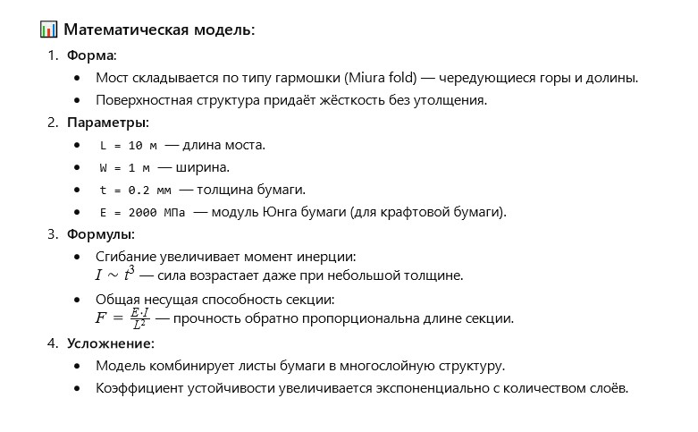

Автор: Валерій
Я спостерігав, як людина, використовуючи мистецтво орігамі, склала з паперу маленького динозавра.
Ввечері, проходячи через сквер, я зупинився біля лавочки, де літній чоловік складав з паперу маленького динозавра. Його рухи були повільні, точні та майже урочисті — кожен згин як рядок у вірші, кожен поворот паперу як подих давньої істоти. Він був майстром орігамі. Він помітив мій інтерес і, усміхнувшись, протягнув мені інший листок паперу: — Спробуйте самі. Це не просто іграшка — це мистецтво і… математика. Так почалася моя зустріч з геометрією паперових світів.
Можеш запропонувати розкрой орігамі для квітки «ТЮЛЬПАН» і вірш у стилі японської танка про юнака, у якого поки немає грошей на живі квіти для коханої, але він знайшов спосіб висловити свою вічну любов — адже живі квіти в’януть, а мистецтво орігамі і його тюльпани ніколи?
Він не міг купити
їй живих квітів зараз —
світ занадто дорогий.
Але в кожному паперовому тюльпані
билося серце навіки.
Можна запропонувати простий розкрой паперового тюльпана в техніці орігамі, щоб його зміг зробити навіть дитина?
Ось базовий розкрой та схема складання орігамі-квітки «ТЮЛЬПАН»:
📐 Розкрой:
- Візьміть квадрат паперу (краще тонкий, 15×15 см).
- Складіть по діагоналях і по сторонах (хрест і X).
- Сформуйте базову форму «водяна бомба» (waterbomb base).
- Слідуйте інструкції на схемі нижче :


Можна побудувати математичну модель міцності та послідовності згинання багатошарової папери, щоб вона витримала вагу людини як пішохідний міст довжиною 10 метрів?
Так! Орігамі-інженерія вже використовується для створення мостів, панелей супутників і навіть складних конструкцій для медицини. Ось спрощена модель міцності для такого «мосту»:
